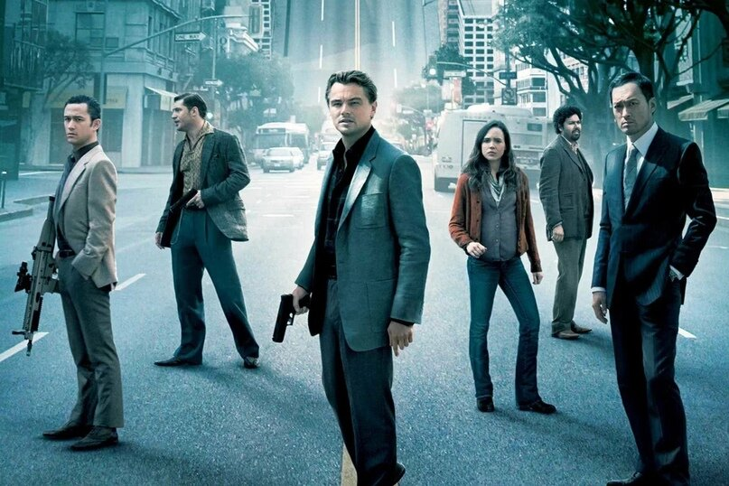
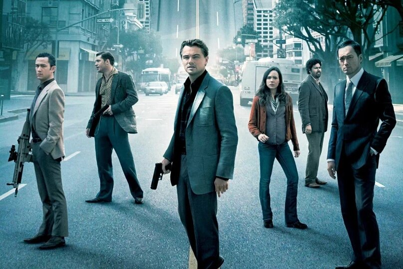
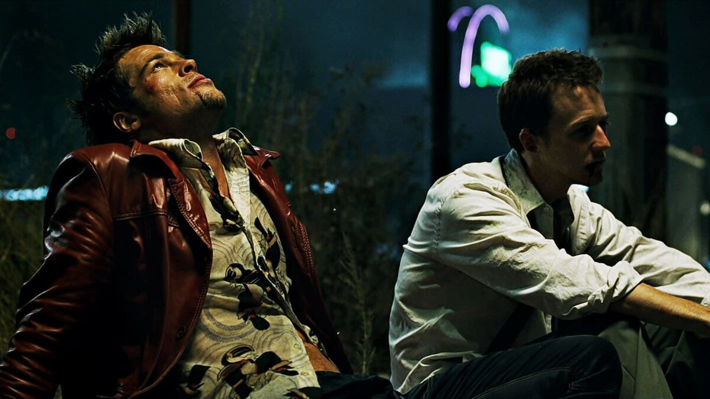
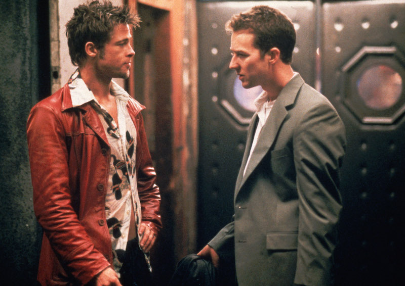
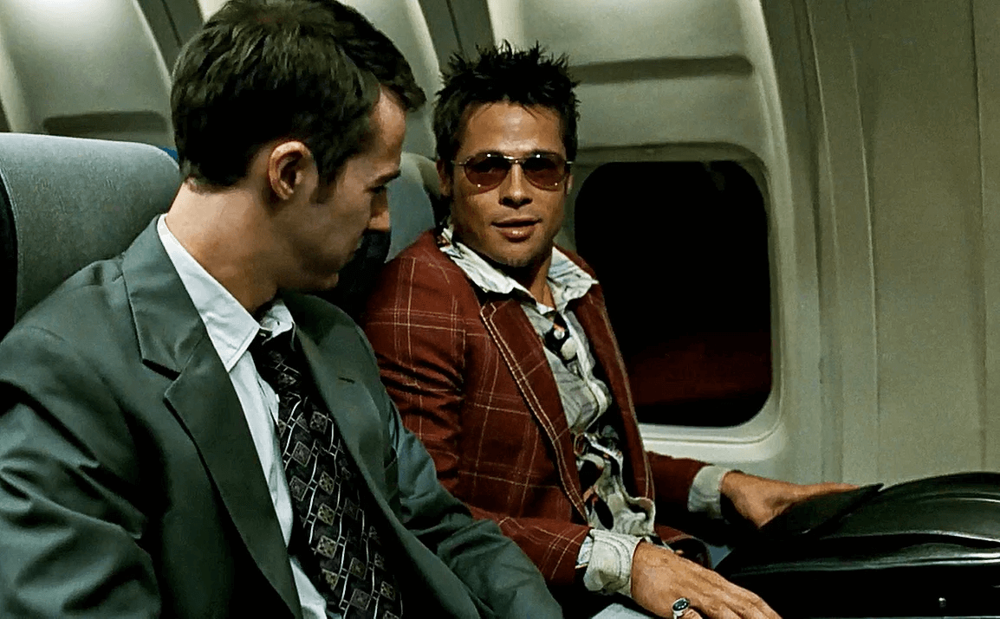
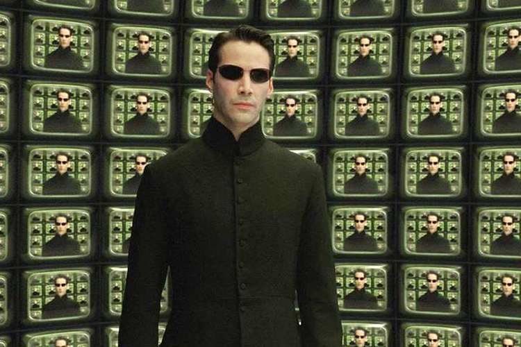
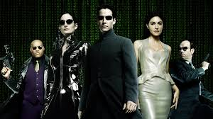
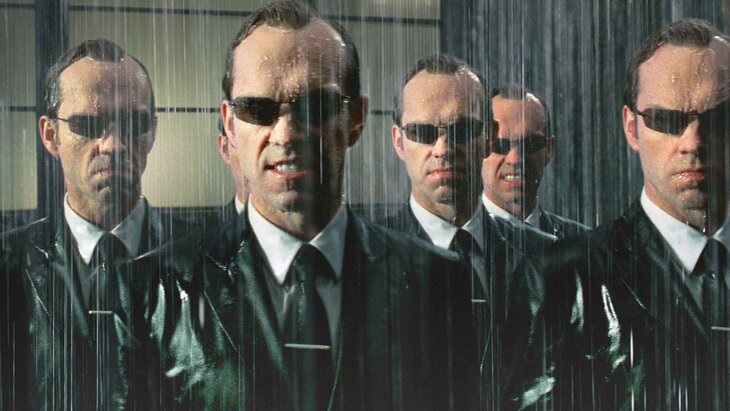

Мои любимые фильмы
Начало
Краткое содержание фильма
Доминик Кобб – вор, который специализируется на похищении идей из подсознания людей во время сна. Он получает предложение от влиятельного бизнесмена: вместо того, чтобы украсть идею, ему нужно внедрить её в сознание другого человека. Кобб должен совершить последнее задание, чтобы очистить своё имя и вернуться домой к детям, но для этого ему предстоит пережить самые опасные и невероятные сны.
| Режиссёр |
Кристофер Нолан |
| Жанр |
Научная фантастика, Триллер |
| Год выпуска |
2010 |
| В главных ролях |
Леонардо ДиКаприо, Джозеф Гордон-Левитт, Эллен Пейдж |
 


Бойцовский клуб
Краткое содержание фильма
В будущем человечество сталкивается с экологической катастрофой. Кобб и его команда астронавтов отправляются в поисках нового дома для людей, пролетая через червоточину. На их пути стоят не только технические проблемы, но и невероятные аномалии времени и пространства, которые ставят под угрозу не только их миссию, но и жизнь на Земле.
| Режиссёр |
Кристофер Нолан |
| Жанр |
Научная фантастика, Драма |
| Год выпуска |
2014 |
| В главных ролях |
Мэттью МакКонахи, Энн Хэтэуэй, Джессика Честейн |



Матрица
Краткое содержание фильма
Нио – обычный программист, который случайно узнает, что реальность, в которой он живет, на самом деле является виртуальной симуляцией, созданной машинами, чтобы контролировать человечество. Он встречает Морфеуса, который предлагает ему выбор: остаться в мире иллюзий или познать правду и бороться за свободу людей.
| Режиссёр |
Братья Вачовски |
| Жанр |
Научная фантастика, Экшн |
| Год выпуска |
1999 |
| В главных ролях |
Киану Ривз, Лоренс Фишберн, Кэрри-Энн Мосс |


